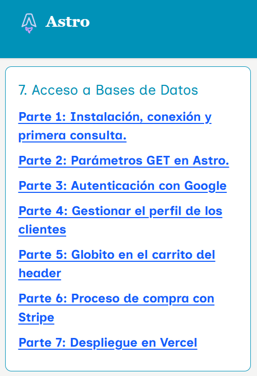

¿Qué es una arquitectura en 3 capas?
(Cliente, Servidor de Aplicaciones y Servidor de Base de Datos)
Diferencia entre servidores en la nube (Cloud) y servidores privados
Desarrollo y despliegue de aplicaciones web
ACTIVIDAD MF0493_3 |
|
|---|---|
Tienda Virtual |
Crear una tienda virtual en Astro, con una Base de Datos PostGres en Supabase y publicada en Vercel que venda un sólo tipo de productos clasificado por categorías. Para hacer la compra, se usará Stripe Pantallas de la Tienda
|
Entrega |
URL del proyecto en Vercel. URL del proyecto en Github Recordar que el proceso de la tienda está acá  |
RESULTADO DE LA OBSERVACIÓN
|
||||
ACTIVITAT |
FACTORES |
PUNTUACIÓN |
||
|---|---|---|---|---|
| Max | Obtenida | Min | ||
Tienda
|
1. API Autenticación | 1 | 0 | |
| 2. Pool y funciones BBDD (Interfaces, async-await y try-catch) |
1 | 0 | ||
| 3. Uso SQL nativo (No SDK Supabase) | 1 | 0 | ||
4. Manejo del Get para pasar parámetros por URL |
1 | 0 | ||
5. Uso de define:vars (variables BackEnd→FrontEnd) |
1 | 0 | ||
| 6. Proceso de Compra en Stripe | 1 | 0 | ||
| 7. Seguridad (Uso de Prepared Statements, no publicar claves en Github...) | 1 | 0 | ||
| 8. Estética / Responsividad | 1 | 0 | ||
9. Documentación (Read.me en Github explicando las características del proyecto) |
1 | 0 | ||
| 10. Publicación (Vercel+Github) | 1 | 0 | ||
| Total | 10 | 0 | ||